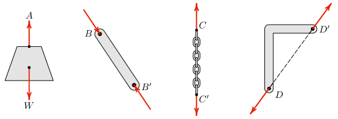

Consider the weight suspended by a rope shown in Figure 3.3.1. Diagrams of this type are called space diagrams; they show the objects as they exist in space.
In mechanics we are interested in studying the forces acting on objects and in this course, the objects will be in equilibrium. The best way to do this is to draw a diagram that focuses on the forces acting on the object, not the mechanisms that hold it in place. We call this type of diagram a free-body diagram because it shows the object disconnected or freed from its supporting mechanisms. You can see the free-body diagram for this situation by moving the slider in the interactive to position two. This shows that there are two forces acting on the object; the force of the rope holding it up, and the weight of the object which is trying to pull it to earth, which we treat as acting at its center of gravity.
The actual shape of the weight is not important to us, so it can simply be represented with a dot, as shown when the view control is in position three. The forces have been slid along their common line of action until they both act on the dot, which is an example of an equivalent transformation called the “Principle of Transmissibility.” This diagram in view three is completely sufficient for this situation.
Instructions.
Move the slider see different representations of the situation.
Figure3.3.1.A suspended weight
Drawing free-body diagrams can be surprisingly tricky. The reason for this is that you must identify all the forces acting on the object and correctly represent them on the free-body diagram. If you fail to account for all the forces, include additional ones, or represent them incorrectly, your analysis will surely be wrong.
So what kind of analysis can we do here? Admittedly not much. We can find the tension in the rope caused by a particular weight and use it to select an appropriately strong rope, or we can determine the maximum weight a particular rope can safely support.
The actual analysis is so trivial that you’ve probably already done it in your head, nevertheless several ways to approach it will be shown next.
We conclude that force \(\vec{T}\) is equal and opposite to \(\vec{W}\text{,}\) that is, since the weight is acting down, the rope acts with the same magnitude but up.
Tension is the magnitude of the rope’s force. Recall that the magnitude of a vector is always a positive scalar. We use normal (non-bold) typefaces or absolute value bars surrounding a vector to indicate its magnitude. For any force \(\vec{F}\text{,}\)
\begin{equation*}
F = \vert\vec{F}\vert\text{.}
\end{equation*}
To find how the tension is related to \(\vec{W}\text{,}\) take the absolute value of both sides
\begin{align*}
\vert\vec{T}\vert \amp = \vert -\vec{W}\vert\\
T \amp = W
\end{align*}
We can also formulate this example in terms of unit vectors. Recall that \(\jhat\) is the unit vector that points up. It has a magnitude of one with no units associated. So in terms of unit vector \(\jhat\text{,}\)\(\vec{T} = T \jhat\) and \(\vec{W} = -W \jhat\text{.}\)
Example3.3.3.1D Vector Addition using unit vectors.
Find the relation between the tension \(T\) and weight \(W\) for the system of Figure 3.3.1 using unit vectors.
Answer.
\begin{align*}
T \amp = W
\end{align*}
Solution.
Express the forces in terms of their magnitudes and the unit vector \(\jhat\) then proceed as before,
\begin{align*}
\Sigma \vec{F}\amp = 0\\
\vec{T}+ \vec{W} \amp = 0\\
T\jhat + W (-\jhat ) \amp = 0\\
T \cancel{\jhat} \amp = W \cancel{\jhat}\\
T \amp = W
\end{align*}
In the previous example, the unit vector \(\jhat\) completely dropped out of the equation leaving only the coefficients of \(\jhat\text{.}\) This will be the case whenever you add vectors which all act along the same line of action.
The coefficients of \(\ihat\text{,}\)\(\jhat\text{,}\) and \(\khat\) are known as the scalar components. A scalar component times the associated unit vector is a force vector.
When you use scalar components, the forces are represented by scalar values and the equilibrium equations are solved using normal algebraic addition rather than vector addition. This leads to a slight simplification of the solution as shown in the next example.
Example3.3.4.1D Vector Addition using scalar components.
Find the relation between the tension \(T\) and weight \(W\) for the system of Figure 3.3.1 using scalar components.
Answer.
\begin{gather*}
T = W
\end{gather*}
Unsurprisingly, we get the same result.
Solution.
The forces in this problem are \(\vec{W} = -W\ \jhat\) and \(\vec{T} = T\ \jhat\text{,}\) so the corresponding scalar components are
\begin{align*}
W_y \amp= -W \amp T_y \amp= T
\end{align*}
.
Adding scalar components gives,
\begin{align*}
\Sigma F_y \amp = 0\\
W_y + T_y \amp = 0\\
-W + T \amp = 0\\
T \amp = W
\end{align*}
Unsurprisingly, we get the same result.
Subsection3.3.2Scalar Components
The scalar component of a vector is a signed number which indicates the vector’s magnitude and sense, and is usually identified by a symbol with a subscript which indicates the line of action of the vector.
So for example, \(F_x = \N{10}\) is a scalar component. We can tell it’s not a vector because it \(F_x\) is not bold. \(\N{10}\) is the magnitude of the associated vector; the subscript \(x\) indicates that the force acts “in the \(x\) direction,” in other words it acts on a line of action which is parallel to the \(x\) axis; and the (implied) positive sign means that the vector points towards the positive end of the \(x\) axis — towards positive infinity. So a scalar component, while not a vector, contains all the information necessary to completely describe and draw the corresponding vector. Be careful not to confuse scalar components with vector magnitudes. A force with a magnitude of \(\N{10}\) can point in any direction, but can never have a negative magnitude.
Scalar components can be added together algebraically, but only if they act “in the same direction.” It makes no sense to add \(F_x\) to \(F_y\text{.}\) If that’s what you want to do, first you must convert the scalar components to vectors, then add them according to the rules of vector addition.
Example3.3.5.1D Scalar Addition.
If \(A_x = \lb{10}\) and \(B_x\) = \(\lb{-15}\text{,}\) find the magnitude and direction of their resultant \(\vec{R}\text{.}\)
Start by sketching the two forces. The subscripts indicate the line of action of the force, and the sign indicates the direction along the line of action. A negative \(B_x\) points towards the negative end of the \(x\) axis.
\(R\) is the scalar component of the resultant \(\vec{R}\text{.}\)
The negative sign on the result indicates that the resultant force acts to the left.
Example3.3.6.2D Scalar Addition.
If \(F_x\) = \(\N{-40}\) and \(F_y\) = \(\N{30}\text{,}\) find the magnitude and direction of their resultant \(\vec{F}\text{.}\)
Answer.
\begin{equation*}
\vec{F} = \N{50} \text{ at } \ang{143.1} \measuredangle
\end{equation*}
Solution.
In this example the scalar components have different subscripts indicating that they act along different lines of action, and this must be accounted for when they are added together.
Make a sketch of the two vectors and add them using the parallelogram rule. In this case, the parallelogram is a rectangle, so right-triangle trig is appropriate.
\(\theta\) is measured from the negative \(x\) axis. The direction of \(\vec{F}\) from the positive \(x\) axis is \((\ang{180} - \theta) = \ang{143.1}\text{,}\) so
\begin{equation*}
\vec{F} = \N{50} \text{ at } 143.1^\circ \measuredangle
\end{equation*}
Subsection3.3.3Two-force Bodies
As you might expect from the name, a two-force body is a body with two forces acting on it, like the weight just discussed. As we just saw, in order for a two-force body to be in equilibrium the two forces must add to zero. There are only three possible ways that this can happen:
The two forces must either
share the same line of action, have the same magnitude, and point away from each other, or
share the same line of action, have the same magnitude, and point towards each other, or
both forces have zero magnitude.
When two forces have the same magnitude but act in diametrically opposite directions, we say that they are equal-and-opposite. When equal and opposite forces act on an object and they point towards each other we say that the object is in compression, when they point away from each other the object is in tension. Tension and compression describe the internal state of the object.

Figure3.3.7.Examples of two-force bodies
Did you notice that last three examples in Figure 3.3.7 did not include the object’s weight? These are simplifictions that ignore the object’s weight to make them two-force bodies. If the object’s weight was included, it would be a three-force body. This approximation is justifiable when the object’s weight is small in comparison with the tensile or compressive forces. In this case, we say that the weight is negligable, i.e. small enough to neglect. Also note that all these examples show single forces acting at each point. If several forces act at a point, they should be combined into a single resultant force acting there.
Two force bodies appear frequently in multipart structures and machines which will be covered in Chapter 6. Some examples of two force bodies are struts and linkages, ropes, cables and guy wires, and springs.
Thinking Deeper3.3.8.Locating the Center of Gravity.
As we will see in Chapter 7, the center of gravity is the point where all the weight of an object can be considered to be concentrated.
An object suspended by a cable or a frictionless pin is a two-force body. When hung freely it will naturally rotate until its center of gravity lies directly beneath the support point to ensure that the lifting force and the weight share the same line of action. This means that the center of gravity of an object can be found by suspending it from several different points, and noting intersection of lines drawn straight down from the hook (like a plumb bob).
In practical terms, to safely lift a heavy object with a chain fall or crane, you must always ensure that the hook is directly above the center of gravity before hoisting the load. The load will be unstable if lifted from any other point.
Instructions.
Move the suspension point \(A\) with the slider. The object will rotate until the center of gravity is directly below the suspension point to maintain equilibrium.
Example3.3.9.Tug of War.
Marines and Airmen at Goodfellow Air Force Base are competing in a tug of war and have reached a stalemate. The Marines are pulling with a force of \(\lb{1500}\text{.}\) How hard are the Airmen pulling? What is the tension in the rope?
This is a simple question, but students often get it wrong at first.
Answer.
The tension in the rope is \(\lb{1500}\text{.}\) Both teams are pulling with the same force.
Solution.
Assumptions.
A free-body diagram of the rope is shown.
Figure3.3.10.
We’ll solve this with scalar components because there’s no need for the additional complexity of the vector approaches in this simple situation.
We’ll align the \(x\) axis with the rope with positive to the right as usual to establish a coordinate system.
Assume that the pull of each team can be represented by a single force. Let force \(M\) be supplied by the Marines and force \(A\) by the Airmen; call the tension in the rope \(T\text{.}\)
Assume that the weight of the rope is negligible; then the rope can be considered a particle because both forces lie along same line of action.
Givens.
\(M = \lb{1500}\text{.}\)
Procedure.
Since they’re stalemated we know that the rope is in equilibrium.
Applying the equation of equilibrium gives:
\begin{align*}
\Sigma F_x \amp= 0\\
-M + A \amp= 0\\
A \amp= M\\
\amp = \lb{1500}
\end{align*}
We find out that both teams pull with the same force. This was probably obvious without drawing the free-body diagram or solving the equilibrium equation.
It may seem equally obvious that if both teams are pulling with \(\lb{1500}\) in opposite directions that the tension in the rope must be \(\lb{3000}\text{.}\) This is wrong however.
The tension in the rope \(T\) is an example of an internal force and in order to learn its magnitude we need a free-body diagram which includes force \(T\text{.}\) To expose the internal force we take an imaginary cut through the rope and draw (or imagine) a free-body diagram of either half of the rope.
Figure3.3.11.
The correct answer is easily seen to be \(T = A = M = \lb{1500}\text{.}\)
Example3.3.12.Hanging Weight.
The wire spool being lifted into the truck consists of \(\m{750}\) of three strand medium voltage (5 kV) 1/0 AWG electrical power cable with a 195 amp capacity at 90°C, weighing 927 kg/km, on a \(\kg{350}\) steel reel.
How much weight is supported by the hook and high tension polymer lifting sling?
Answer.
\begin{equation*}
W = \N{10300}
\end{equation*}
Solution.
The entire weight of the wire and the spool is supported by the hook and sling.
Remember that weight is not mass and mass is not force. The total weight is found by multiplying the total mass by the gravitational constant \(g\text{.}\)
How can we apply the principles of mechanics in the two previous examples if the rope and the sling are clearly not “rigid bodies?”
Answer.
They are not rigid, but they are inextensible and in tension. Under these conditions they don’t change shape, so we can treat them as rigid. If the force were to change direction and put either into compression, our assumptions and analysis would fail. That is why “tug of war” involves pulling and not pushing.
Subsection3.3.4General Procedure
The general procedure for solving one, two, or three-dimensional particle equilibrium problems is essentially the same. Start with the 5-step method for creating a free-body diagram and solve for your unknowns using your equilibrium equations.
Draw a Free-Body Diagram
Select and isolate the particle. The “free-body” in free-body diagram means that a concurrent force particle or connection must be isolated from the supports physically holding it in place. This means creating a separate free-body diagram from your problem sketch.
Establish a coordinate system. This step is simple for one-dimensional problems: just label a positive direction for the forces.
Identify all loads. Include force vectors on your free-body diagram representing each applied load pushing or pulling the body, in addition to the body’s weight, if it is non-negligible. Every vector should have a descriptive variable name and a clear arrowhead indicating its direction.
Identify all reactions. Reactions represent the resistance of the physical supports you cut away by isolating the body in step 1. All particle supports are two-force members that result in tension or compression forces. Label each reaction with a descriptive variable name and a clear arrowhead.
Label the diagram. Verify that every force is labeled with either a value or a symbolic name if the value is unknown. Your final free-body diagram should be a stand-alone presentation and is the basis of your equilibrium equations.
Create and Solve Equilibrium Equations
Write the equilibrium equation. Now represent your free-body diagram as an equilibrium equation. Your computation should start with the governing equation, like \(\Sigma \vec{F}=0\text{.}\)
Solve for unknown. Use algebra to simplify the equilibrium equation and solve for the unknown value. Write the unit of your answer. All answers in engineering have units unless you prove that they don’t. Finally, underline or box your answers.
Check your work. Do the results seem reasonable given the situation? Have you included appropriate units?